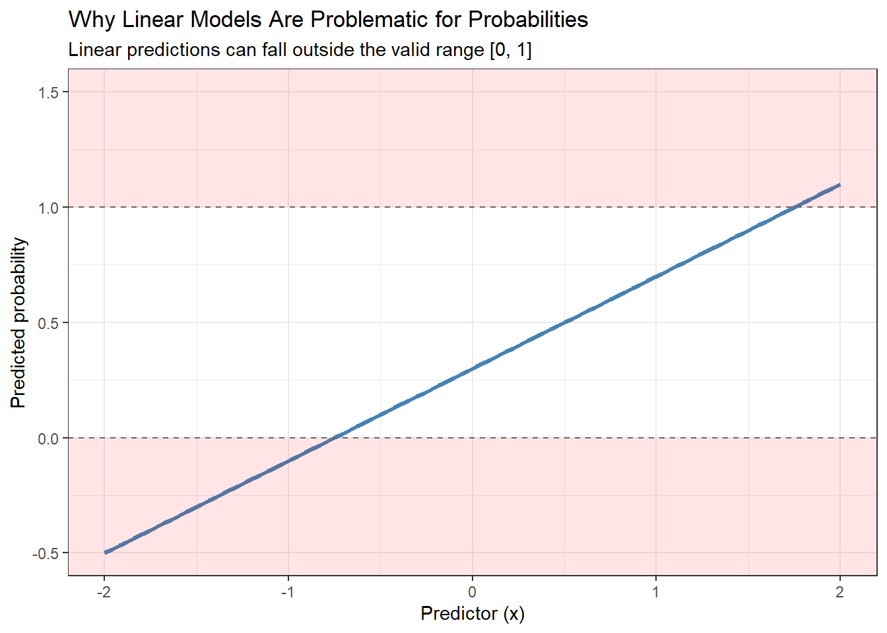
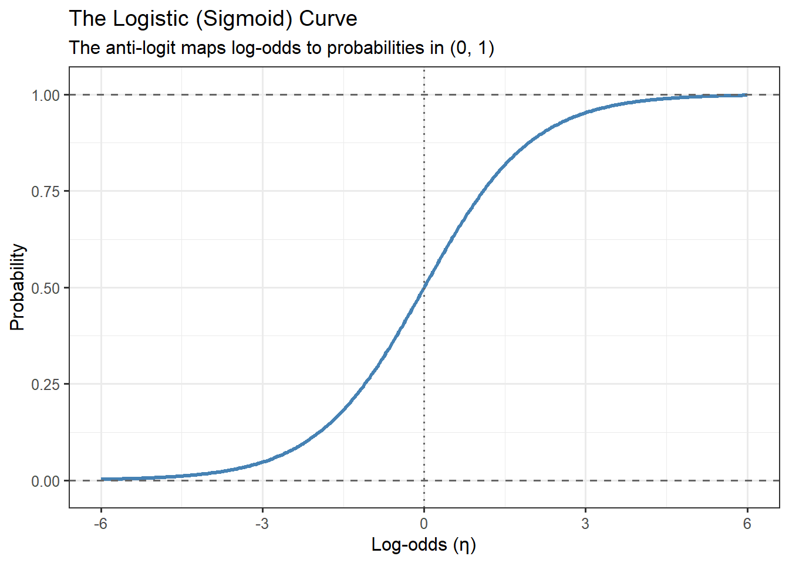
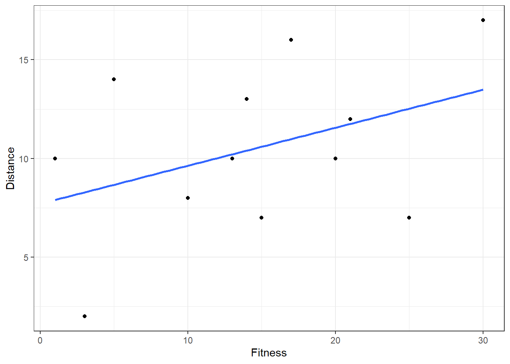
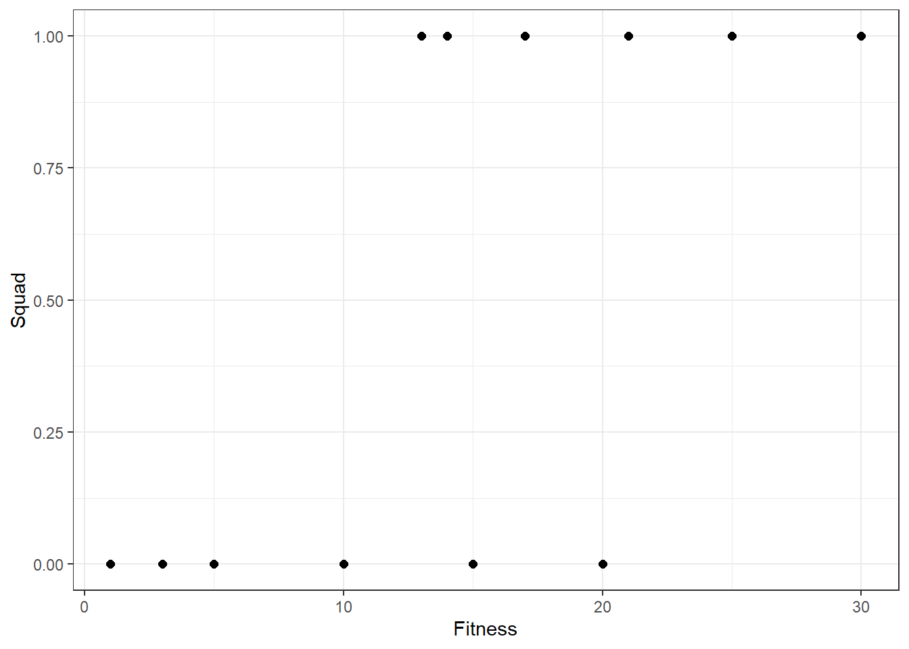
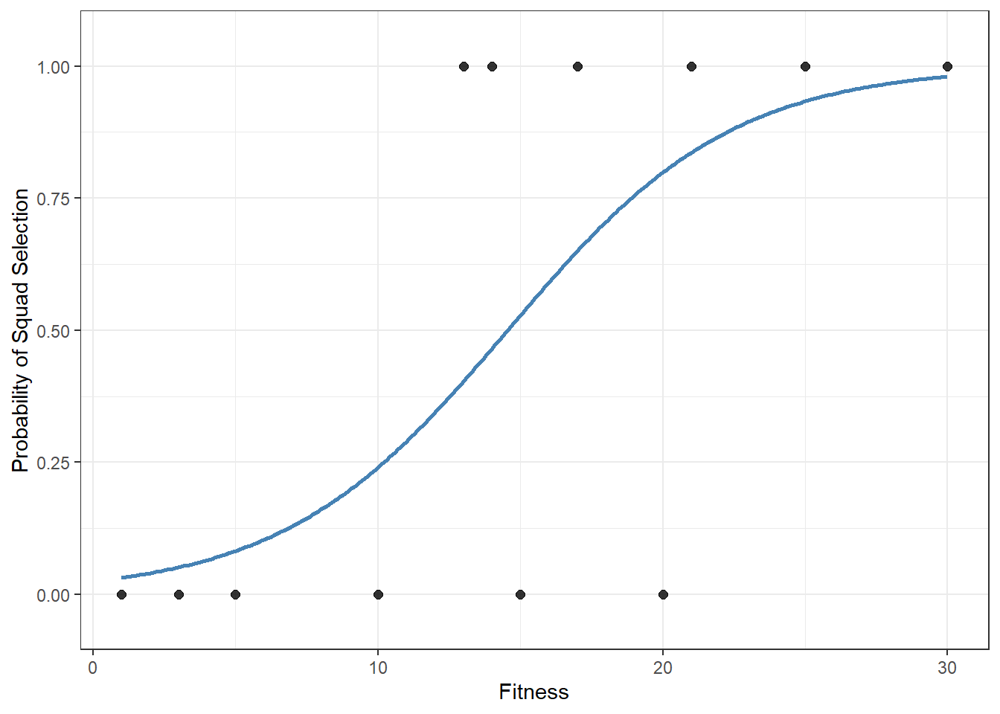

9 Logistic Regression
9.1 Introduction
In the previous chapter, we explored classification and prediction, focusing on how to use a linear probability model (LPM) to handle categorical outcomes. In this approach, we treated the outcome (for example, win vs. lose, or success vs. failure) as a binary variable and fitted a standard linear regression model. Using this model, we generated predicted values and then applied a classification rule (such as assigning outcomes greater than 0.5 to “success” and those less than 0.5 to “failure”). While this approach gave us a first glimpse into prediction for categorical outcomes, we also discussed its limitations:
- Predicted probabilities from the LPM can fall outside the valid range of 0 to 1.
- The relationship between predictors and the outcome is assumed to be linear, which is often unrealistic for probability data.
- The errors in the model are heteroscedastic (the variance changes with the level of the predictors), violating a key assumption of linear regression.
These issues make the linear probability model less reliable, especially when we want to use the model for decision-making or inference.
In this chapter, we will learn about logistic regression, a method specifically designed for categorical outcomes. Logistic regression overcomes the key problems of the linear probability model by ensuring that predicted probabilities always fall between 0 and 1 and by modelling the relationship between predictors and the outcome in a more flexible, non-linear way. It is one of the most widely used models in data science, business, and the social and health sciences for analysing binary and categorical data.
9.2 Log-odds
Logistic regression models the log of the odds (log-odds) as a linear function of predictors. By working with odds, rather than probabilities directly, we can map any probability between 0 and 1 onto the entire real number line. This transformation removes the hard boundaries that caused problems for the linear probability model and allows us to use familiar linear modelling ideas in a setting where the outcome is binary.
This also changes how we interpret model coefficients. Instead of describing changes in probability, coefficients in a logistic regression describe how the odds of an outcome change when a predictor increases. While this may feel less intuitive at first, odds have a key advantage: they respond smoothly and consistently across the entire range of possible outcomes. Small changes near probabilities of 0 or 1 behave differently from changes near 0.5, and odds naturally capture this non-linear behaviour.
In the sections that follow, we will build up this idea step by step—first by understanding probability, odds and log-odds on their own, and then by showing how they form the foundation of a regression model that is better suited to classification problems than the linear probability model.
9.3 Recap: Probability and the Complement Probability
Before we dive into logistic regression, it is useful to revisit some core probability concepts that underpin the model. Logistic regression is not built directly on probabilities, but instead on odds and log-odds (logits). Understanding these ideas will help us see why logistic regression is structured the way it is.
9.3.1 Probability
The probability of an event measures the likelihood that the event will occur. It is always a value between 0 and 1:
\[P(\text{Event})=\frac{\text{N outcomes where Event occurs}}{\text{Total N of possible outcomes}}\]
For example, the probability of drawing a clubs card from a standard deck of playing cards would be:

9.3.2 Complement Probability
The complement probability (\(A^c\) or \(A'\)) represents the likelihood that the event does not occur. Using our example from above:

This can also be expressed as:
\[ \begin{aligned} P(\text{not clubs}) &= 1-P(\text{clubs}) \\ &= 1 - \frac{13}{52} \\ &= \frac{39}{52} \\ &= \frac{3}{4} \end{aligned} \]
9.4 Odds and the Odds Ratio
While probabilities are intuitive and easy to interpret, they are not the only way to describe uncertainty. Another closely related way of expressing likelihood is through odds. Instead of measuring how likely an event is to occur on a 0–1 scale, odds compare the chance that an event occurs to the chance that it does not occur.
9.4.1 Odds
The odds of an event are the ratio of the probability the event happens to the probability it does not happen (which are two terms we just recapped in the section above):
\[ \begin{aligned} Odds(\text{Event}) &= \frac{P(\text{Event})}{1-P(\text{Event})} \\ \end{aligned} \]
So, in our current example:

This means the odds of drawing a clubs card are 1 to 3.
9.4.2 Odds Ratio
An odds ratio (OR) compares the odds of an event occurring in one group to the odds of it occurring in another group:
\[OR=\frac{Odds(A)}{Odds(B)}\] For example, suppose two basketball teams have the following free-throw success probabilities:
- \(P(\text{Team}_A)=0.80\)
- \(P(\text{Team}_B)=0.60\)
The first step is to calculate the odds for each team:
- \(Odds(A)=\frac{0.80}{1-0.80}=4\)
- \(Odds(B)=\frac{0.60}{1-0.60}=1.5\)
Then the Odds Ratio (OR) would be:
\[OR=\frac{4}{1.5}=2.67\]
This means Team A’s odds of scoring a free throw are 2.67 times higher than Team B’s.
9.5 The Logit Function
Logistic regression is built on the idea that, rather than modelling probability directly, we model the log of the odds of an event occurring. This transformation is called the logit function, and it solves the major limitations we faced with the linear probability model.
9.5.1 The Problem With Modeling Probabilities Directly
Recall that a probability, \(p\), always lies between 0 and 1. But a linear regression model does not respect this restriction — it can produce predictions less than 0 or greater than 1. For example, if we tried to model “probability of winning a game” with a linear function like:
\[p=\beta_0+\beta_1X\]
there is no guarantee that the predicted p will stay in the 0–1 range.
We need a function that:
- Keeps predictions in the range (0, 1).
- Still allows us to use a linear equation for estimation and interpretation.
This is where the logit function comes in.
9.5.2 From probabilities to odds and log-odds (the logit)
A probability \(p\) is always between 0 and 1, but a linear model can produce predictions outside that range. To address this, logistic regression does not model \(p\) directly. Instead, it models a transformed version of \(p\) that can take any real value.
Step 1 — Convert a probability to odds
The odds of an event compare “success” to “failure”:
\[ \text{Odds} = \frac{p}{1-p} \]
You can read odds as:
“How many times more likely is success than failure?”
Some examples:
If \(p = 0.50\),
\[ \text{Odds} = \frac{0.50}{1-0.50} = \frac{0.50}{0.50} = 1 \]
Odds = 1 means success and failure are equally likely (a 1:1 ratio).
If \(p = 0.80\),
\[ \text{Odds} = \frac{0.80}{1-0.80} = \frac{0.80}{0.20} = 4 \]
Odds = 4 means success is four times as likely as failure (a 4:1 ratio).
If \(p = 0.20\),
\[ \text{Odds} = \frac{0.20}{1-0.20} = \frac{0.20}{0.80} = 0.25 \]
Odds = 0.25 means success is one quarter as likely as failure — equivalently, failure is four times as likely as success (a 1:4 ratio).
Key property: odds can take any value from \(0\) to \(+\infty\).
This is an improvement over probabilities, but odds are still bounded below at 0 and are often highly skewed, which makes them unsuitable for direct linear modelling.
Step 2 — Take the log of the odds (log-odds)
To remove the lower bound and spread values more symmetrically, we take the natural logarithm of the odds:
\[ \text{logit}(p) = \ln\left(\frac{p}{1-p}\right) \]
This is known as the logit (or log-odds) transformation.
This transformation has several important properties:
As \(p \rightarrow 0\), \(\text{logit}(p) \rightarrow -\infty\)
As \(p \rightarrow 1\), \(\text{logit}(p) \rightarrow +\infty\)
When \(p = 0.5\),
\[ \text{logit}(0.5) = \ln\left(\frac{0.5}{0.5}\right) = \ln(1) = 0 \]
So:
- Negative logit values correspond to probabilities below 0.5
- Positive logit values correspond to probabilities above 0.5
- A logit of 0 corresponds to a 50–50 chance
The logit transformation maps the probability range \((0,1)\) onto the entire real line \((-\infty, +\infty)\). This allows us to use a linear model for the transformed outcome, while still guaranteeing that predicted probabilities (after transforming back) remain between 0 and 1.
Step 3 — The logistic regression model
In logistic regression, we assume that the logit of the probability is a linear function of the predictors:
\[ \text{logit}(p) = \ln\left(\frac{p}{1-p}\right) = \beta_0 + \beta_1 X_1 + \beta_2 X_2 + \cdots + \beta_k X_k \]
This looks just like an ordinary linear regression equation — except the left-hand side is not the outcome itself, but the log-odds of the probability of the outcome.
In words:
Logistic regression assumes that the log-odds of success change linearly with the predictors.
By modelling log-odds rather than probabilities directly, logistic regression avoids impossible predictions and provides a principled way to connect linear models with binary outcomes.
9.6 The Anti-Logit (Inverse Logit)
In the previous section, we introduced the logit function, which transforms a probability \(p\) into the log-odds of success. This transformation is what makes logistic regression possible, because it allows us to model a linear relationship on an unbounded scale.
However, once we have estimated a logistic regression model, we usually do not want to interpret results in terms of log-odds. Probabilities are far more intuitive. To convert model outputs back to probabilities, we use the anti-logit (or inverse logit) function.
9.6.1 The anti-logit function
The anti-logit function converts log-odds, denoted by \(\eta\), back into a probability:
\[ p = \frac{e^{\eta}}{1 + e^{\eta}} \]
Here, \(\eta\) represents the linear predictor from the logistic regression model:
\[ \eta = \beta_0 + \beta_1 X_1 + \beta_2 X_2 + \cdots + \beta_k X_k \]
This transformation ensures that, regardless of the value of \(\eta\), the resulting probability is always valid.
9.6.1.1 Properties of the Anti-Logit
The anti-logit function has several important properties that make logistic regression well suited for modelling binary outcomes.
9.6.1.2 Range restriction
No matter what value \(\eta\) takes (from \(-\infty\) to \(+\infty\)), the resulting probability always satisfies:
\[ 0 < p < 1 \]
This guarantees that predicted probabilities never fall outside the valid range.
9.6.1.3 S-shaped (sigmoid) curve
When plotted against \(\eta\), the anti-logit function produces an S-shaped curve, also known as the logistic or sigmoid curve.
Its behaviour at key values is:
As \(\eta \rightarrow -\infty\), \(p \rightarrow 0\)
As \(\eta \rightarrow +\infty\), \(p \rightarrow 1\)
At \(\eta = 0\),
\[ p = \frac{e^0}{1 + e^0} = \frac{1}{2} = 0.5 \]
9.6.1.4 Symmetry
The logistic curve is symmetric around \(\eta = 0\).
This point corresponds to a probability of 0.5 and represents the location where the curve is steepest.
Together, these properties explain why logistic regression is so powerful: probabilities change smoothly with predictor values while never straying outside valid bounds.
Graphically, the anti-logit transformation produces the logistic curve, which has three key regions:
- At very low values of \(\eta\), the curve flattens near 0
- Around \(\eta = 0\), the curve is steepest, meaning small changes in predictors have the largest effect on probability
- At very high values of \(\eta\), the curve flattens near 1

This behaviour reflects many real-world processes. Once an outcome is almost impossible or almost certain, small changes in predictors have little impact. Logistic regression naturally captures this pattern while still allowing us to use a linear model on the log-odds scale.
9.7 The Binomial Distribution
So far, we have focused on modelling binary outcomes — events that either occur or do not occur (such as pass/fail, win/loss, success/failure). To understand how logistic regression connects to probability theory, we now introduce the binomial distribution.
The binomial distribution describes the probability of observing a certain number of successes when:
- Each trial has only two possible outcomes (success or failure),
- The probability of success, \(p\), is the same for every trial,
- The trials are independent.
These conditions closely match many real-world situations, such as:
- Passing or failing an exam question,
- Making or missing a free throw,
- Winning or losing a game.
9.7.1 Bernoulli Trials
Before introducing the binomial distribution, it is helpful to start with the simplest case: a Bernoulli trial.
A Bernoulli trial is a single experiment with:
- Probability of success \(p\),
- Probability of failure \(1 - p\).
We often code outcomes as:
- \(Y = 1\) for success,
- \(Y = 0\) for failure.
In this setting:
- \(P(Y = 1) = p\),
- \(P(Y = 0) = 1 - p\).
Logistic regression models the probability \(p\) of success for a single Bernoulli trial.
9.7.2 From Bernoulli to Binomial
Now suppose we repeat a Bernoulli trial \(n\) times under identical conditions.
Let:
- \(n\) = number of trials,
- \(X\) = number of successes observed.
Then \(X\) follows a binomial distribution, written as:
\[ X \sim \text{Binomial}(n, p) \]
The binomial distribution gives the probability of observing exactly \(k\) successes out of \(n\) trials:
\[ P(X = k) = \binom{n}{k} p^k (1 - p)^{n - k} \]
Here:
- \(\binom{n}{k}\) counts the number of ways to choose \(k\) successes from \(n\) trials,
- \(p^k\) represents the probability of \(k\) successes,
- \((1 - p)^{n - k}\) represents the probability of \(n - k\) failures.
9.7.3 Interpreting the Binomial Distribution
The binomial distribution answers questions such as:
If the probability of success is \(p\), how likely am I to observe \(k\) successes out of \(n\) attempts?
For example:
- If a student has a 60% chance of answering any question correctly,
- And they answer 10 independent questions,
the binomial distribution tells us how likely it is they will get exactly 6 correct, 7 correct, or any other number.
As \(n\) increases:
- The distribution becomes more concentrated around its average,
- Random variation still exists, but extreme outcomes become less likely.
9.7.4 Mean and Variability
The binomial distribution has two important summary measures:
9.7.4.1 Expected number of successes
\[ \mathbb{E}(X) = np \]
This represents the average number of successes we would expect if we repeated the experiment many times.
9.7.4.2 Variance
\[ \text{Var}(X) = np(1 - p) \]
The variability depends on both:
- The number of trials \(n\),
- How uncertain the outcome is (largest when \(p = 0.5\)).
9.7.5 Why the Binomial Distribution Matters for Logistic Regression
Logistic regression is built on the binomial distribution.
- Each observation is treated as a Bernoulli trial,
- The probability of success \(p_i\) can vary across observations,
- The logit link connects \(p_i\) to a linear predictor.
Rather than modelling the outcome directly, logistic regression models the probability parameter of a binomial process:
\[ Y_i \sim \text{Bernoulli}(p_i) \]
\[ \text{logit}(p_i) = \beta_0 + \beta_1 X_{i1} + \cdots + \beta_k X_{ik} \]
In this way:
- The binomial distribution provides the probabilistic foundation,
- The logistic model explains how predictors influence the probability of success.
9.8 A worked Example
Suppose we wanted to build a model to predict distance ran (km) based on fitness level. A study was conducted which involved 12 adults. Suppose each participant completed a fitness test where higher scores represent greater levels of fitness. Each participant was then asked to run as far as they could in one session (assume under a controlled testing environment).
ID | Fitness | Distance |
|---|---|---|
1 | 1 | 10 |
2 | 3 | 2 |
3 | 5 | 14 |
4 | 10 | 8 |
5 | 13 | 10 |
6 | 15 | 7 |
7 | 17 | 16 |
8 | 20 | 10 |
9 | 21 | 12 |
10 | 14 | 13 |
11 | 25 | 7 |
12 | 30 | 17 |
We could visualise this with a scatterplot and trendline:

Suppose we also had information on whether or not the participants belonged to a running squad. And instead of examining distance covered, we were predicting squad membership (where Non-squad members are denoted with 0s and Squad members are denoted with 1s):
ID | Fitness | Distance | Squad Member |
|---|---|---|---|
1 | 1 | 10 | 0 |
2 | 3 | 2 | 0 |
3 | 5 | 14 | 0 |
4 | 10 | 8 | 0 |
5 | 13 | 10 | 1 |
6 | 15 | 7 | 0 |
7 | 17 | 16 | 1 |
8 | 20 | 10 | 0 |
9 | 21 | 12 | 1 |
10 | 14 | 13 | 1 |
11 | 25 | 7 | 1 |
12 | 30 | 17 | 1 |
Because Squad member only has 0s and 1s, out plot will look something like:

And therefore, we can fit a logitic regression model to this data:

In R, we would use the glm() function to fit this model:
NoteR Code
model <-
glm(
formula = Squad ~ Fitness,
data = df_sprint2,
family = binomial
)
summary(model)
Call:
glm(formula = Squad ~ Fitness, family = binomial, data = df_sprint2)
Coefficients:
Estimate Std. Error z value Pr(>|z|)
(Intercept) -3.6789 2.2948 -1.603 0.1089
Fitness 0.2528 0.1465 1.726 0.0844 .
---
Signif. codes: 0 '***' 0.001 '**' 0.01 '*' 0.05 '.' 0.1 ' ' 1
(Dispersion parameter for binomial family taken to be 1)
Null deviance: 16.636 on 11 degrees of freedom
Residual deviance: 10.342 on 10 degrees of freedom
AIC: 14.342
Number of Fisher Scoring iterations: 59.8.1 Making Predictions
We can use this output to interpret the linear predictor component in a similar way to how we have done previously (i.e. use the estimate column to determine our coefficients):
\[\eta=-3.68+0.25(\text{Fitness})\]
And we can use the properties of the logit model to calculate the probability of each person belonging to a running squad, based upon this model.
\[ \begin{aligned} p &= \frac{e^{\eta}}{1 + e^{\eta}} \\ &= \frac{e^{-3.68+0.25(\text{Fitness})}}{1 + e^{-3.68+0.25(\text{Fitness})}} \\ \end{aligned} \]
And if we apply this to our original data:
ID | Fitness | Distance | Squad | p |
|---|---|---|---|---|
1 | 1 | 10 | 0 | 0.031 |
2 | 3 | 2 | 0 | 0.051 |
3 | 5 | 14 | 0 | 0.081 |
4 | 10 | 8 | 0 | 0.235 |
5 | 13 | 10 | 1 | 0.394 |
6 | 15 | 7 | 0 | 0.517 |
7 | 17 | 16 | 1 | 0.639 |
8 | 20 | 10 | 0 | 0.789 |
9 | 21 | 12 | 1 | 0.828 |
10 | 14 | 13 | 1 | 0.455 |
11 | 25 | 7 | 1 | 0.929 |
12 | 30 | 17 | 1 | 0.979 |
Now depending on what threshold we use, we might classify these probabilities differently (see Chapter 9). As an example, if we used a threshold of 0.50:
ID | Fitness | Distance | Squad | p | Classification |
|---|---|---|---|---|---|
1 | 1 | 10 | 0 | 0.031 | 0 = Non-Squad |
2 | 3 | 2 | 0 | 0.051 | 0 = Non-Squad |
3 | 5 | 14 | 0 | 0.081 | 0 = Non-Squad |
4 | 10 | 8 | 0 | 0.235 | 0 = Non-Squad |
5 | 13 | 10 | 1 | 0.394 | 0 = Non-Squad |
6 | 15 | 7 | 0 | 0.517 | 1 = Squad |
7 | 17 | 16 | 1 | 0.639 | 1 = Squad |
8 | 20 | 10 | 0 | 0.789 | 1 = Squad |
9 | 21 | 12 | 1 | 0.828 | 1 = Squad |
10 | 14 | 13 | 1 | 0.455 | 0 = Non-Squad |
11 | 25 | 7 | 1 | 0.929 | 1 = Squad |
12 | 30 | 17 | 1 | 0.979 | 1 = Squad |
Overall, the model did a pretty good job - correctly classifying all participants except ID 5 and ID 10, and would have resulted in the following confusion matrix:
Actual
Pred Squad Non-Squad
Squad 4 2
Non-Squad 2 4In this case:
- Out of 6 ‘Squad’ predictions, 4 were correct and 2 were incorrect
- Out of 6 ‘Non-Squad’ predictions, 4 were correct and 2 were incorrect
This means that the FPR and FNR would both be 0.3333, and the overall accuracy would be 0.6667.
9.8.2 Explaining the Regression Coefficients
In logistic regression, the estimated coefficients do not represent changes in probability. Instead, they represent changes in the log-odds of the outcome. To interpret them meaningfully, we must connect the coefficients back to odds and odds ratios.
Recall that logistic regression models:
\[ \text{logit}(p) = \ln\left(\frac{p}{1-p}\right) = \beta_0 + \beta_1 X \]
In our model predicting squad selection from fitness:
\[ \text{logit}(p) = -3.68 + 0.25 \times \text{Fitness} \]
9.8.2.1 The Intercept
The intercept estimate is:
\[ \hat{\beta}_0 = -3.68 \]
This represents the log-odds of being selected when Fitness = 0.
Converting this to odds:
\[ \text{Odds} = e^{-3.68} \approx 0.025 \]
This means that, at Fitness = 0, the odds of squad selection are approximately 0.025 to 1, or about 1 selection for every 40 non-selections.
In practice, Fitness = 0 may not be a meaningful value, so the intercept is often best viewed as a baseline reference point rather than a quantity of direct interest.
9.8.2.2 The Fitness Coefficient
The estimated coefficient for Fitness is:
\[ \hat{\beta}_1 = 0.25 \]
This means:
For a one-unit increase in Fitness, the log-odds of squad selection increase by 0.25.
Because log-odds are not intuitive, we usually exponentiate this coefficient to obtain an odds ratio.
9.8.2.3 Odds Ratios
Exponentiating the Fitness coefficient gives:
\[ \text{Odds ratio} = e^{0.25} \approx 1.28 \]
This has a clear interpretation:
For each one-unit increase in Fitness, the odds of being selected for the squad are multiplied by 1.28.
Equivalently:
- The odds increase by 28% for every additional unit of Fitness.
This interpretation holds regardless of the current probability — odds ratios describe multiplicative changes in odds, not additive changes in probability.
9.8.2.4 Why Probabilities Change Non-Linearly
Although the coefficient implies a constant multiplicative change in odds, the corresponding change in probability depends on where you are on the logistic curve:
- When probabilities are near 0.5, small changes in Fitness lead to large changes in probability
- When probabilities are near 0 or 1, the same change in Fitness has a smaller effect on probability
This explains why logistic regression produces an S-shaped curve rather than a straight line.
9.8.2.5 Statistical Significance
The p-value for Fitness is:
\[ p = 0.084 \]
This provides weak evidence that Fitness is associated with squad selection at the 10% level, but not strong evidence at the conventional 5% level. Importantly, statistical significance does not affect how the coefficient is interpreted — it only affects our confidence in the estimated relationship.
9.8.3 Multiple Predictors
Let’s have a look at what happens when we include an additional predictor to the model. Here we want to see if we can predict Squad membership based upon Fitness Score and Distance ran:
NoteR Code
model2 <-
glm(
formula = Squad ~ Fitness + Distance,
data = df_sprint2,
family = binomial
)
summary(model2)
Call:
glm(formula = Squad ~ Fitness + Distance, family = binomial,
data = df_sprint2)
Coefficients:
Estimate Std. Error z value Pr(>|z|)
(Intercept) -9.9075 6.3359 -1.564 0.118
Fitness 0.3016 0.1773 1.700 0.089 .
Distance 0.5197 0.4155 1.251 0.211
---
Signif. codes: 0 '***' 0.001 '**' 0.01 '*' 0.05 '.' 0.1 ' ' 1
(Dispersion parameter for binomial family taken to be 1)
Null deviance: 16.6355 on 11 degrees of freedom
Residual deviance: 7.7566 on 9 degrees of freedom
AIC: 13.757
Number of Fisher Scoring iterations: 6From the output:
\[\eta=-9.91+0.30(\text{Fitness})+0.52(\text{Distance})\]
And therefore:
\[ p = \frac{e^{-9.91+0.30(\text{Fitness})+0.52(\text{Distance})}}{1 + e^{-9.91+0.30(\text{Fitness})+0.52(\text{Distance})}} \]
If we once again use a threshold of 0.50, the predictions become:
ID | Fitness | Distance | Squad | p | Classification |
|---|---|---|---|---|---|
1 | 1 | 10 | 0 | 0.012 | 0 = Non-Squad |
2 | 3 | 2 | 0 | 0.000 | 0 = Non-Squad |
3 | 5 | 14 | 0 | 0.244 | 0 = Non-Squad |
4 | 10 | 8 | 0 | 0.060 | 0 = Non-Squad |
5 | 13 | 10 | 1 | 0.308 | 0 = Non-Squad |
6 | 15 | 7 | 0 | 0.146 | 0 = Non-Squad |
7 | 17 | 16 | 1 | 0.971 | 1 = Squad |
8 | 20 | 10 | 0 | 0.784 | 1 = Squad |
9 | 21 | 12 | 1 | 0.933 | 1 = Squad |
10 | 14 | 13 | 1 | 0.741 | 1 = Squad |
11 | 25 | 7 | 1 | 0.774 | 1 = Squad |
12 | 30 | 17 | 1 | 1.000 | 1 = Squad |
This time around, our confusion matrix is:
Actual
Pred Squad Non-Squad
Squad 5 1
Non-Squad 1 5Overall, by adding Distance to our model:
- Out of 6 ‘Squad’ predictions, 5 were correct and 1 was incorrect
- Out of 6 ‘Non-Squad’ predictions, 5 were correct and 1 were incorrect
This means that the FPR and FNR would both be 0.1667, and the overall accuracy would be 0.8333 (these metrics improved from the previous model which only used Fitness as a predictor).